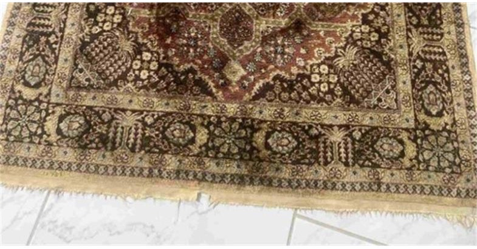
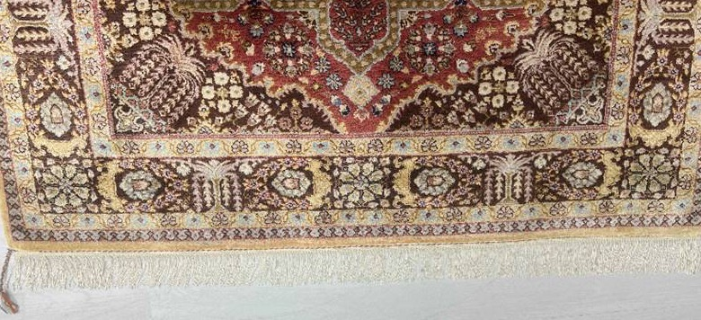
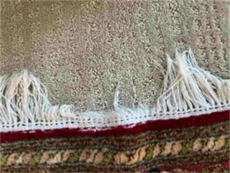
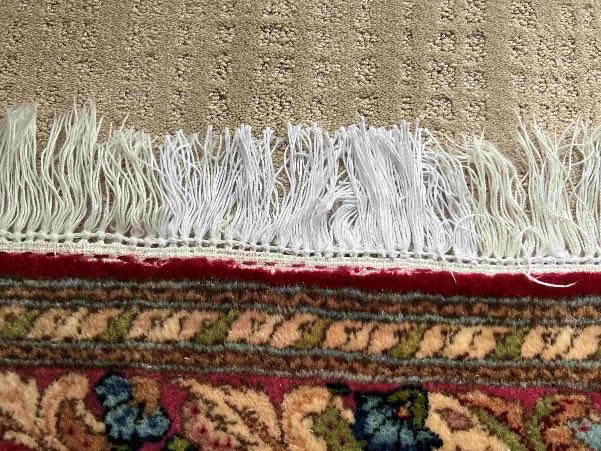
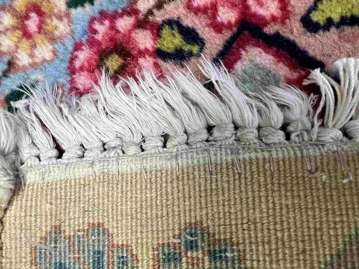
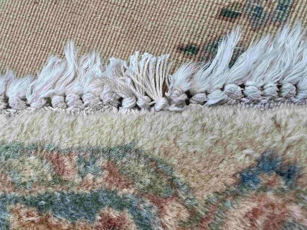
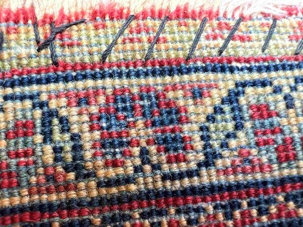
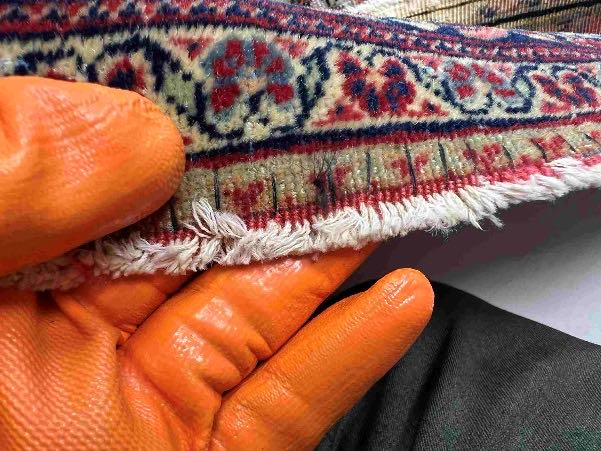
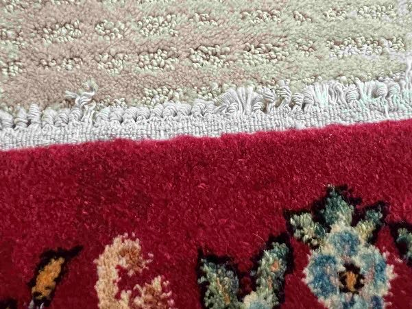
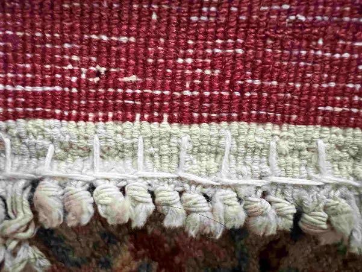

Oriental rug restoration for Boston and Cambridge: invisible hand-knotted pile re-weaving, fringe reconstruction, and museum-grade conservation by master weaver Mo Nooraee.
Fine Persian and Oriental rugs are woven masterpieces designed to endure generations. However, moth damage, worn fringes, and pile wear require traditional care to preserve their value and aesthetic integrity. Led by master weaver Mo Nooraee, we source matching handspun highland wool and vegetable dyes to repair antique rugs invisibly.
At Noor Oriental Rugs, Inc., we reject short-cut machine repairs. Every thread is matched for fiber count, spin density, and color run, ensuring that the structural and historical value of your heirloom rug is preserved completely.
Our Oriental and Persian rug repair services include:
Email photos of your rug’s damaged areas to info@noororientalrugs.com or describe them in our evaluation form. Mohammad will provide a personal museum-quality assessment.
Go to Evaluation FormWhen a beloved rug suffers from frayed, damaged, or unraveling edges, as seen in “Before Sarbafi Reconstruction”, it compromises both its beauty and structural integrity. Our expert Sarbafi reconstruction service goes beyond simple repairs by meticulously rebuilding the rug’s foundational warp threads. The remarkable results of this traditional restoration technique are evident in “After Sarbafi Reconstruction”, which showcases a newly restored, uniform fringe that perfectly secures the rug’s edge while returning it to its original elegance.




This technique is used to protect the pile of a rug by stitching over its edge to prevent the loose threads from unraveling by creating a zig-zag or overlocking stitch along the raw edge.






Pioneered by Mo Nooraee
Rated 4.9 out of 5 from 114 reviews on Google.
“We had a great experience having a Turkish rug cleaned and repaired, and a kilim rug completely restored after being trashed by moths. The kilim restoration is especially astonishing - one would never know the terrible shape it was in. The Turkish rug is bright and crisp again, and the work done to shore up the ends has greatly improved its appearance and durability. … Thank you for making these rugs beautiful again!”
“We are very happy with the service we received at Noor Oriental Rugs. We brought in a rug for evaluation and were immediately treated as a guest and not a client. Mr. Noor gave us the history of the rug and showed us how he would restore it and discussed the cleaning process. When we picked up the rug several weeks later, the colors were vibrant and the restoration work was indistinguishable from the side that was not in need of repair.”
The cost of rug restoration is determined by the size of the damaged area, knot density (KPSI), and the materials required, such as matching handspun wool and organic dyes. Noor provides complimentary evaluations to establish a precise estimate.
Depending on the complexity of the re-weaving and matching raw materials, restoration typically takes anywhere from 4 weeks to several months for extensive, museum-quality conservation.
Our restoration follows ten rules so the repair blends in: wool from the same region, hand-spun and organically dyed, several shades spun together for a patina of age, the same knot as the original weave (Turkish or Persian), and the same yarn thickness.
Yes. Antique hand-knotted rugs represent valuable artistic and historical legacies. Restoring them preserves their structural integrity, aesthetic value, and resale worth.
Yes. We offer free pickup and delivery in the Greater Boston area.